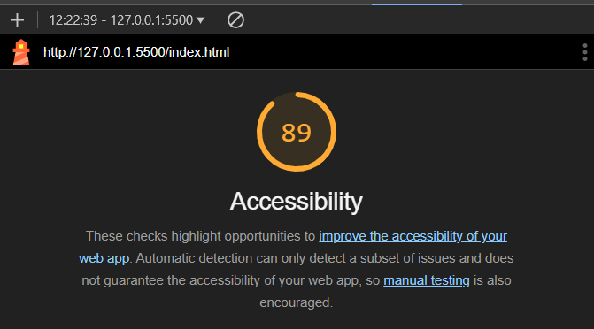
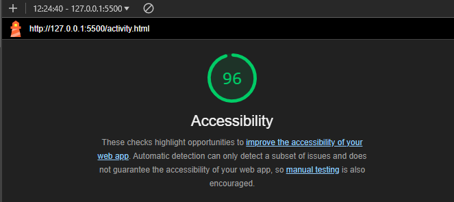
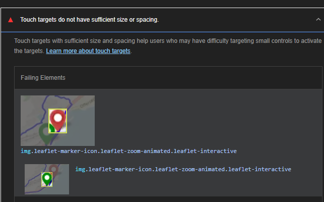

Introduction
We tested the website's accessibility using Google Lighthouse, a feature integrated into the developer tools of Google Chrome. The results are presented and discussed on this page. Additionally, we manually checked the site for accessibility errors and non-compliances and reviewed our universal design choices to ensure they meet the accessibility standards.
Google Lighthouse Results for the Index Page

The accessibility review identifies several issues. First, certain
elements with ARIA roles are missing required child elements, which
may hinder effective interpretation by assistive technologies like
screen readers. This oversight presents an opportunity to improve ARIA
usage, enhancing accessibility for users who rely on these cues.
Additionally, lists contain elements that are not strictly
<li>, <script>, or
<template>, potentially disrupting the structure
and readability for screen readers when navigating tabular or list
data. Another issue noted is that the heading elements are not in
sequential order, which can affect the logical navigation flow,
particularly for keyboard and screen reader users. Finally, some video
elements lack <track> elements for captions, which
limits accessibility for users with hearing impairments. Addressing
these issues would help provide a more inclusive experience, allowing
all users to interact more easily with the content.
Positive aspects include:
- ARIA attributes were correctly used and valid.
-
Images contained descriptive
altattributes, improving screen reader accessibility. - Background and foreground colors had sufficient contrast, making text readable for users with low vision.
Errors and Fixes
Tables and Lists
To address the issue, we identified that the
<li> closing tags (</li>) were
incorrectly placed in the middle of the list items, causing the
<a> links to be technically outside their
respective list items. This disrupted the semantic structure of the
HTML, making it less accessible and incorrectly formatted.
Fix: We removed the misplaced
</li> tags from the middle of each list item and
ensured that the <a> tags were nested correctly
within their respective <li> elements. This
restored the proper structure, where each
<li> fully encapsulates the link
(<a>).
Before:
<ul class="social-media-links">
<li class="social-media-link"></li><a href="https://www.facebook.com/oslomet/">Facebook</a></li>
<li class="social-media-link"></li><a href="https://twitter.com/OsloMet">X (Twitter)</a></li>
<li class="social-media-link"></li><a href="https://no.linkedin.com/school/oslomet/">LinkedIn</a></li>
<li class="social-media-link"></li><a href="https://www.instagram.com/oslomet/?hl=nb">Instagram</a></li>
</ul>
After:
<ul class="social-media-links">
<li class="social-media-link"><a href="https://www.facebook.com/oslomet/">Facebook</a></li>
<li class="social-media-link"><a href="https://twitter.com/OsloMet">X (Twitter)</a></li>
<li class="social-media-link"><a href="https://no.linkedin.com/school/oslomet/">LinkedIn</a></li>
<li class="social-media-link"><a href="https://www.instagram.com/oslomet/?hl=nb">Instagram</a></li>
</ul>
Summary: This fix ensures proper semantic HTML
structure and improves accessibility and functionality. Each
<li> now correctly encapsulates its associated
<a> tag, maintaining the integrity of the list.
Navigation
Before, the title "OSLO METROPOLITAN UNIVERSITY" was set as a
<h3> header, which was semantically incorrect since
it was not meant to act as a header but rather as regular text with
additional styling. To fix this, we changed the
<h3> to a <p> element and added
a specific class to target it for styling in the CSS.
Fix: Changed the element to
<p> with a class name, ensuring semantic HTML usage
and allowing us to apply styling through the CSS file.
Example:
Before:
<div class="contact-info">
<h3><b>OSLO METROPOLITAN UNIVERSITY</b></h3>
<p>STORBYUNIVERSITETET</p>
<p>PO 4, St. Olavs plass</p>
<p>0500 Oslo</p>
<p>Tel.: 67 23 50 00</p>
</div>
After:
<div class="contact-info">
<p class="contact-university-name">OSLO METROPOLITAN UNIVERSITY</p>
<p>STORBYUNIVERSITETET</p>
<p>PO 4, St. Olavs plass</p>
<p>0500 Oslo</p>
<p>Tel.: 67 23 50 00</p>
</div>
CSS: A specific class was added in the stylesheet to
style the <p> element as needed:
.contact-university-name {
font-weight: bold;
font-size: 1.3rem;
}
This change ensures semantic correctness while maintaining flexibility for styling through CSS.
Google Lighthouse Results for the Activity Page
The accessibility review highlights an issue with touch targets that do not have sufficient size or spacing. This can impact users who rely on touch devices, particularly those with motor impairments, as small or closely spaced touch targets can be difficult to tap accurately. The touch targets highlight our start and end point for the hikes we did, so they are pretty close to each other. This is why the error occurs. Because of that, we won't make changes for the accessibility here.
Positive Results:
- ARIA roles and attributes were valid and correctly used.
- Proper contrast between text and background.
-
Images had descriptive
altattributes, supporting visually impaired users.
Universal Design Choices for Accessibility
In developing this website, we applied several universal design principles to make it accessible to as many users as possible, including those with disabilities. While automated tools like Google Lighthouse helped identify some accessibility issues, they couldn’t catch everything. Therefore, our approach combined automated testing with specific design choices aimed at improving the user experience beyond what automated tests can detect.
Semantic HTML Structure
We used semantic HTML tags like <header>,
<main>, <section>, and
<footer> to help assistive technologies understand
the structure of the page. For example, the header contains the site’s
main navigation, providing a clear starting point for screen readers
and enhancing keyboard navigation:
<header>
<h1>Hiking Adventures</h1>
<nav>
<ul>
<li><a href="index.html">Home</a></li>
<li><a>Activity</a></li>
<li><a href="accessibility.html">Accessibility</a></li>
<li><a href="github.html">GitHub</a></li>
</ul>
</nav>
</header>
Alternative Text for Images
All images include descriptive alt attributes, which
provides context for screen reader users. This approach is crucial for
users who cannot see the images but rely on descriptions to understand
visual content. For example, on the activity page, an image showing a
view from Offersøykammen includes descriptive alt text:
<img src="media/images/offersøykammen_view.jpeg" alt="View from Offersøykammen" class="landscape">
This alt text allows visually impaired users to
understand the image’s content, enhancing the overall experience.
High Contrast and Readable Colors
We ensured high contrast between text and background colors to improve readability for users with low vision. The header uses a yellow background with black text to provide strong contrast, which meets accessibility standards:
header {
background-color: #ffd500; /* Yellow background */
color: black; /* Black text */
padding: 10px;
}
This color scheme makes the text more readable and accessible to users with various visual impairments.
Responsive Design for Various Devices
We implemented responsive design using media queries, allowing the website to adapt to different screen sizes. This is particularly beneficial for users on mobile devices, as it ensures readability and accessibility. For example, the font size and layout adjust automatically for smaller screens:
@media screen and (min-width: 768px) {
.table-row div {
min-height: 60px;
}
}
This approach makes the content flexible and accessible on both large screens and small mobile devices.
Accessible Link Text and ARIA Labels
For external links, we included aria-label attributes to
provide context, particularly for links that open in new tabs. This
allows screen reader users to understand where each link leads. For
example, a link to the Lofoten tourism website includes an ARIA label
to clarify its purpose:
<a href="https://visitlofoten.com/en/" target="_blank" aria-label="Official website of the Lofoten Islands">Lofoten</a>
This aria-label helps users understand the destination of
the link, improving accessibility for users with visual impairments.
Consistent Heading Structure
To create a logical content hierarchy, we used a consistent heading
structure across the pages. This helps screen reader users and
keyboard navigation users understand the flow and importance of
content. On the activity page, for example, we start with a
<h1> for the main title, followed by
<h2> and <h3> tags to structure
the content in descending order:
<h1>Our Hiking Adventure in Lofoten</h1>
<h2>Hiking trails we explored</h2>
<h3>Offersøykammen Trail</h3>
<p>...</p>
<h3>Djevelporten and Fløya Trail</h3>
<p>...</p>
This consistent hierarchy helps users navigate through the content efficiently, especially those using screen readers or other assistive technologies.
Summary
By combining semantic HTML, alternative text for images, high-contrast colors, responsive design, ARIA labels, and consistent heading structure, we enhanced accessibility on multiple fronts. While automated testing tools like Lighthouse provided valuable guidance, our manual adjustments ensured a more inclusive design, meeting universal design standards and creating a more user-friendly experience for all visitors.
Reflection
Automated testing with Lighthouse provided valuable insights but could not detect every accessibility concern. For example, while it did flag small touch targets, manual checks were needed to ensure that the tab order was logical and keyboard-friendly. We also manually reviewed the heading order to ensure a consistent hierarchy, which improves screen reader navigation. This blend of automated and manual testing confirmed that our site meets universal design standards, offering a more inclusive and user-friendly experience.